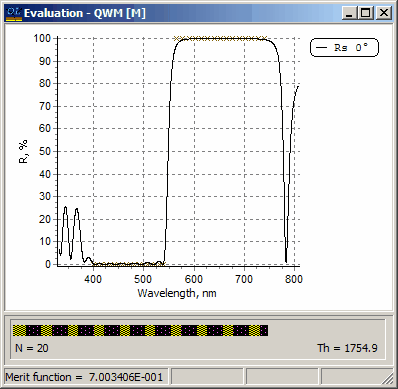

Exercise 7. Design of an edge filter (continued)
Exercise 7. Design of an edge filter (continued)
The final design of the previous exercise features considerable oscillations of the reflectance in the high transmission zone, especially in the neighborhood of 560nm. The reason for these oscillations is that the transition zone between the regions of high and low reflection, specified by the target function, is too narrow. To improve the properties of the reflectance in the high transmission region it is necessary to modify the target function.
Select the Problem directory EX7. In SF Mode you need to use Import Problem Directory command (File Menu).
Load substrate GLASS, layer materials SIO2 and TIO2, and the starting design QWM.
Go to the Target database. You will find two target files with the names Ef-swp and Ef-swp mod. Compare these files with the help of Edit command in the Target database. It is possible to open both files simultaneously and to place Target Editor windows side-by-side. Note that Ef-swp mod target has wider transition zone between low and high reflection regions (25nm).
Target files are opened in the corresponding editors but are not loaded to memory. Due to this reason the Refinement command of the Synthesis menu is unavailable (grayed). Load the Target file Ef-swp mod to memory, choose the Newton method (Analysis and Synthesis Options dialog) and execute the Refinement procedure. This time the final design will have a merit function value of 7.003406E-001. The improvement of the reflectance is readily visible on the screen.
You may want to save the design we have just obtained. There are several ways to do this. The first way is to output the result in the form of an ASCII file creating Current Design Report. The second way is to save the result in the Design database (this function is disabled in the DEMO version). The second way is recommended when you want to save the result for further computations. Any design stored in the Design database can be easily loaded into memory for further use. To save the result in the Design database, go to the Data menu and select Save Design item. The obtained design was already saved for the sake of comparison (file name EF20SW).
